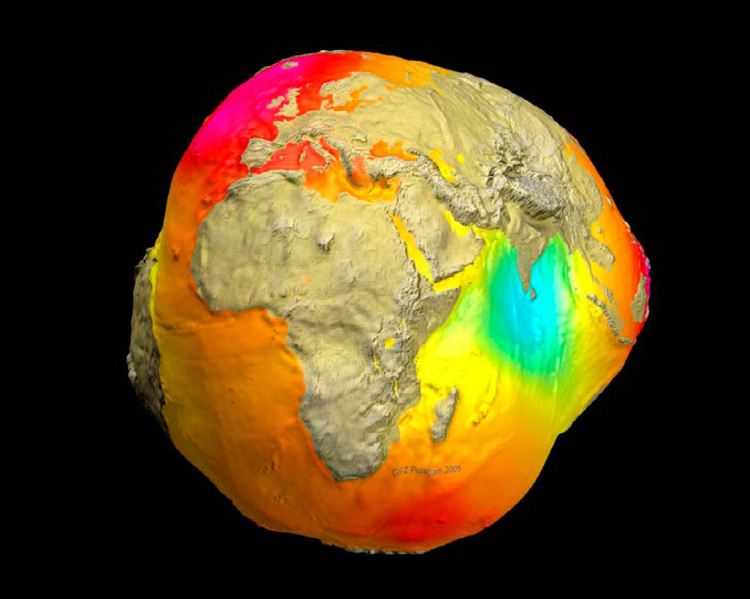
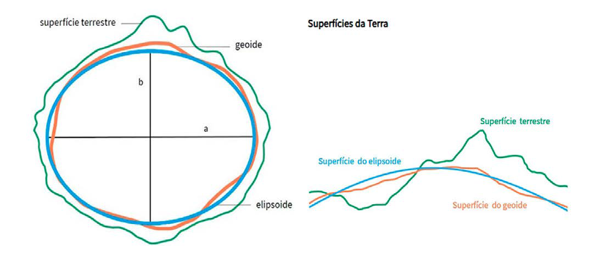

Módulo 3 | Aula 3
Fundamentos da Cartografia
Sistema geodésico de referência
A forma da Terra
Entender a forma da Terra e as suas diferentes possibilidades de representação é imprescindível para representá-la da melhor forma em um documento cartográfico e garantir a precisão espacial dos elementos que se deseja representar. A evolução da tecnologia permitiu comprovar que a Terra não é perfeitamente redonda, nem elipsoide, mas sim um geóide que corresponde à superfície do nível médio do mar homogêneo, supostamente prolongado por sob os continentes.
O geóide é a forma adotada para a Terra e é sobre ela que são realizadas todas as medições. A caracterização do geóide não é matemática, porém física, em cada ponto da superfície terrestre. Sua definição é afetada pela variação das estruturas de massas terrestres.
Como é uma superfície irregular e de difícil tratamento matemático, foi preciso adotar, para efeito de cálculo, um modelo mais simples para representar o nosso planeta.
A forma matemática assumida, então, foi a elipse que ao girar em torno do seu eixo menor forma um volume, o elipsoide de revolução, achatado nos pólos. O elipsoide é a superfície de referência utilizada nos cálculos que fornecem subsídios para a elaboração de uma representação cartográfica (MENEZES; FERNANDES, 2013).
Figura 1: Geóide (NASA, CHAMP, GRACE, GFZ, DLR.)

Fonte: Nasa, Earthdata. https://www.earthdata.nasa.gov/news/feature-articles/precision-behind-sea-level-rise
Figura 2: Esquema de representação das superfícies terrestres (IBGE)

Fonte: Adaptado de Estudo Kids (www.estudokids.com.br), CC BY-SA 4.0, adaptação por IA (Gemini).
Sistemas geodésicos brasileiros
Os sistemas geodésicos de referência buscam uma melhor correlação entre o geóide e o elipsoide, elegendo um elipsoide de revolução que melhor se ajuste ao geóide local.
Alguns sistemas geodésicos de referência já foram usados no Brasil, mas o atualmente adotado é o SIRGAS 2000, que serve como referencial para América do Sul.
O SIRGAS 2000 entrou em vigência no ano de 2015 e seu uso obrigatório nas publicações oficiais de instituições brasileiras. A adoção do SIRGAS facilitou a integração com sistemas de posicionamento global (GPS) e aumentou a precisão cartográfica. Anteriormente adotava-se o Sistema Geodésico Sul Americano - SAD 69, que entrou em desuso a partir desta data (FITZ, 2008).
É importante estar atento a essas informações acerca dos sistemas de referência do dado utilizado, pois ao usar sistemas não compatíveis, como por exemplo SAD 69 e SIRGAS 2000, onde a distância média para um mesmo ponto em SAD 69 e SIRGAS 2000 é em torno de 65 metros (IBGE, 2005).
Outro sistema comumente conhecido é o sistema geodésico mundial WGS 84, que é o sistema de referência utilizado pelo GPS/ GNSS.